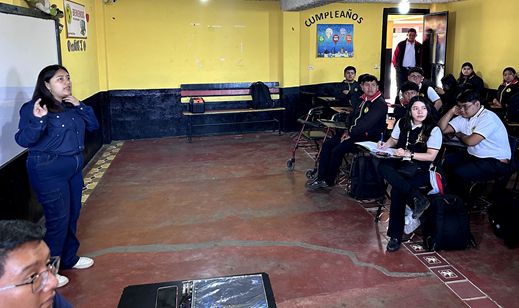
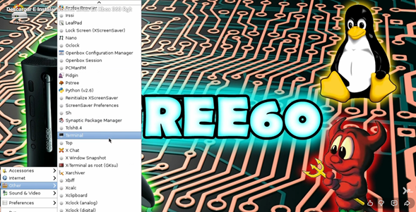

Charla en colegio
Charla en el colegio americano
Pagina de procesos
Pagina que resuelve los procesos por las metodos de FCFS, Prieridad, SJF y RR

Instalación de Linux en Xbox
Instalación de una de Linux en una consola Xbox, haciendo funcional en la consola
Distribucion de LINUX
Creacion sencilla de una distribucion personalizada de linux para programadores